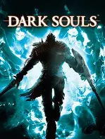
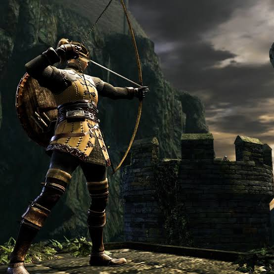
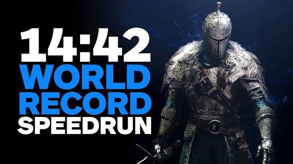
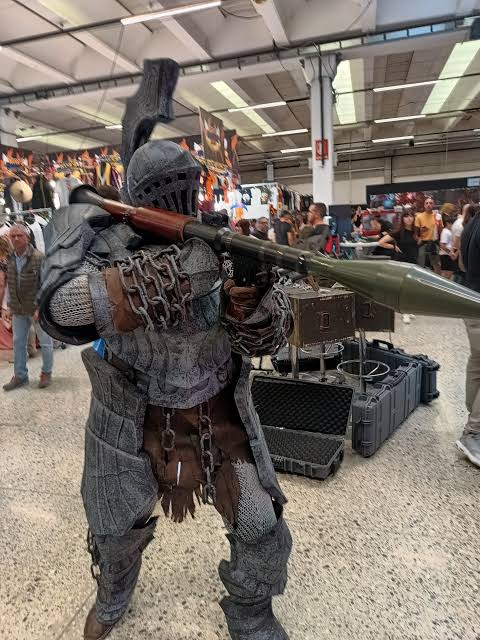

Resumo

Dark Souls é uma série de jogos de RPG de ação e fantasia sombria desenvolvida pela FromSoftware e publicada pela Bandai Namco Entertainment . Criada por Hidetaka Miyazaki , a série começou com o lançamento de Dark Souls (2011) e teve duas sequências, Dark Souls II (2014) e Dark Souls III (2016). Recebeu aclamação da crítica, sendo seu alto nível de dificuldade um dos aspectos mais discutidos. O primeiro Dark Souls é frequentemente citado como um dos maiores jogos de todos os tempos . A série vendeu mais de 39 milhões de cópias em todo o mundo até 2025. . Outros jogos da FromSoftware, incluindo Demon's Souls , Bloodborne , Sekiro: Shadows Die Twice e Elden Ring , compartilham vários conceitos relacionados e levaram à criação do subgênero Soulslike .
Jogo revoluciónario

O sistema de jogabilidade do Dark souls apresenta-se em terceira pessoa e com foco em combates estratégicos e dinâmicos, inseridos em uma íngreme curva de dificuldade, característica mais marcante da série.
O sistema de progressão baseia-se na tradicional progressão de atributos, que variam desde força à inteligência, estamina e fé, dentre outros.
E ele criou um estilo de jogo inovador para época, que fez um jogo onde ele era difícil composto por chefãos, áreas desafiadoras, mas contento um design gráfico excelente, respeitando a geografia do mapa, onde desafiava o jogador a pensar, ter paciência e ter habilidade, o que foi chamado de subgênero Soulslike no RPG.
Recordes do jogo

Melhor Jogo de Todos os Tempos: Em novembro de 2021, Dark Souls conquistou o primeiro lugar na premiação Golden Joystick Awards, eleito o melhor jogo da história dos videogames. Impacto Cultural: Estabeleceu o subgênero "Soulslike", influenciando centenas de títulos subsequentes com sua filosofia de design de nível interligado e alta dificuldade, oque fez ele ser considerado um dos jogos mais difícies que teve. Versão Original (Prepare To Die Edition): A edição clássica de PC lançada anteriormente alcançou um pico histórico de 11.248 jogadores simultâneos em abril de 2016. Versão Remasterizada: O pico de 24.505 usuários simultâneos ocorreu logo após o lançamento da versão atualizada do jogo em maio de 2018.
Comunidade

O canadense Benjamin Gwin, conhecido como bearzly, entrou para o Guinness World Records ao zerar Dark Souls 1 usando nove periféricos diferentes, a lista de Gwin inclui: Guitarra de Rock Band, Bateria de Rock Band, Piano de Rock Band, Tambor Donkey Konga (Gamecube), Microfone (por comando de voz), Wii Mote, Volante e controle do Xbox 360 (este último, utilizando apenas um dedo) além do controle do PC.
E o jogo tem os jogadores conhecidos como 'corredores', que são players que terminam o jogo no menor tempo possível usando falhas do jogo (glitches), como o ladderwarp ou armazenamento de posição em escadas, com tempos abaixo de 20 minutos.
É uma categoria chamada: All Bosses que Consiste em derrotar todos os chefes obrigatórios e opcionais do jogo base na rota mais rápida possível e os players que bateram os recordes fizerem em um tempo médio de 1:00h, sendo o primeiro lugar o canadence Xmonkeh com um tempo de 58.02 minutos.
E em geral a comunidade tratava o jogo como uma obra de arte,porque além do jogo ser dificíl ter cenários bonitos, a história do jogo chama muito a atenção da comunidade por ser algo bem planejado e bem feito e contém fatores que prendem a pessoa que são as histórias que até hoje não foram descobertas como a de personagens, e lugares do mapa de Dark souls.